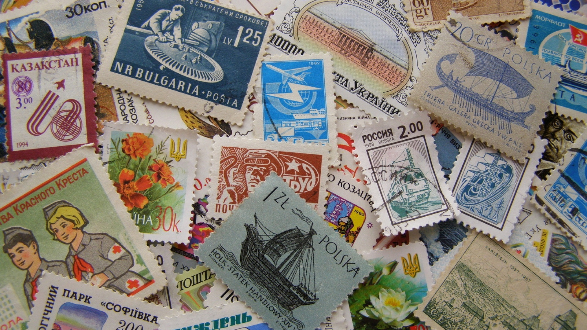
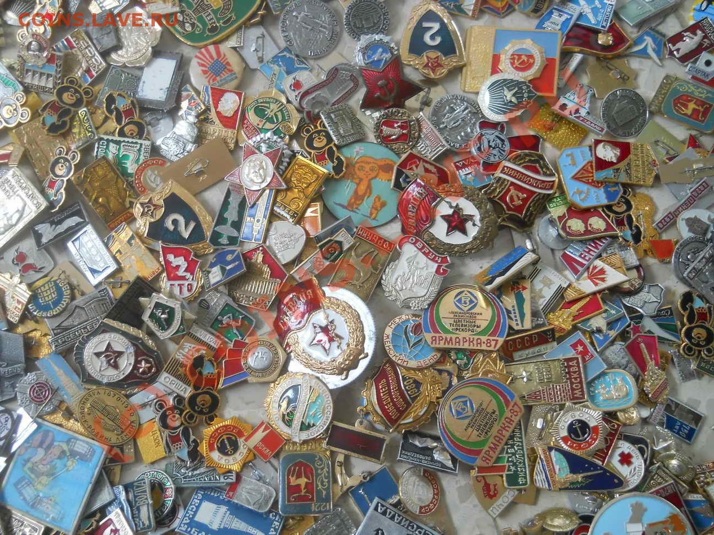
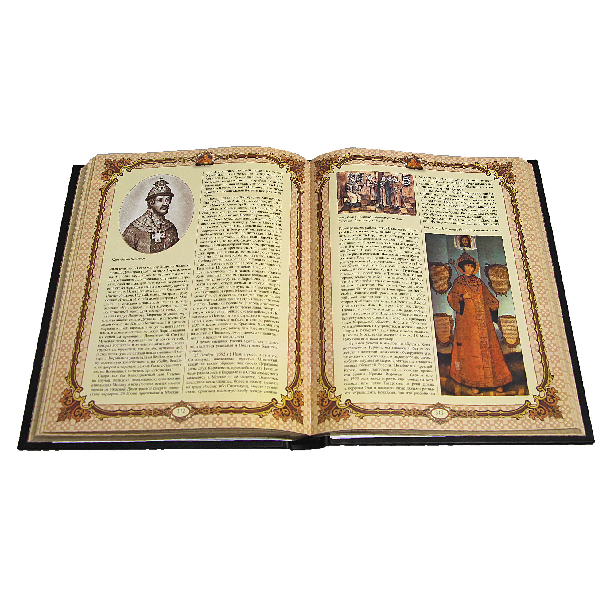
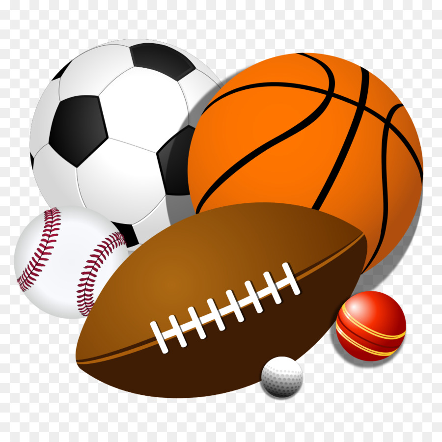

Мои увлечения
Увлечения детства
Марки
Многие в детстве собирали марки. Я тоже не ушел от этого. Моя тема была техника - самолеты, машины, паровозы, корабли. Все что двигалось, пыхтело, гремело, дымило. Но это не было фанатичное увлечение. Просто ходили с друзьями по магазинам "Филателия" и киоскам "Союзпечать" и покупали марки на карманные деньги. Во что-то более серьезное это не выросло.
Значки
Коллекционирование значков тоже было в моем детстве тем, что привлекало, наверное, всех детей. Мы обменивали их, искали по магазинам и киоскам. Помню у моей сестры была огромная коллекция значков с изображениями всех медалей и орденов СССР, причем в натуральную величину. Отличало их только то, что они были значками. Хотя внешне почти не отличишь. Как же мы завидовали ей.
Науки
К любимым наукам всегда относились точные науки (математика, физика), кроме химии. Не любил я химию никогда. Еще очень любил историю. Читал множество книг, как по русской, так и зарубежной истории. Любовь к истории сохранилась до сегодняшнего дня. Впрочем, как и любовь к точным наукам. Отсюда и желание найти время и полноценно изучить программирование.
Спорт
Спорт на последнем месте. Так оно и было. Пробовал разные виды спорта – бокс, плавание. Футбол и хоккей – играл во дворе как все, но особой любви именно к этим видам спорта не было. Всегда хотелось заняться теннисом, но когда был подростком, это был вид спорта для элиты, а потом просто было не до этого. В итоге все занятия спортом закончились – гирями, штангой и другими подручными материалами, с которыми можно заниматься дома в свободное время. Хотя в детстве еще неплохо бегал, в том числе на лыжах.
А что сейчас?
Все увлечения детства прошли. Марки в кляссерах и альбомах сложены на антресолях. Там же и коробки со значками. Из детских увлечений остались только спорт в виде домашних занятий на тренажерах и любовь к точным наукам и истории. Было еще увлечение фотографией – даже в свое время (когда было сложно купить хороший увеличитель) собрал его своими руками. Этот загадочный процесс проявки пленки и фотографий – это было чудо – когда на пустой фотобумаге неожиданно проявлялась фотография. Сейчас оцифрованные снимки - цифровой фотоаппарат, принтер для печати фото и все готов – это уже не то. Поэтому сейчас все увлечения – это познание и изучение нового особенно в тех областях, в которых работаю или в смежных областях. Изучаю все новые тенденции в управлении проектами (то собственно чем и занимаюсь). Сейчас увлекся методологией Agile, изучаю как сами методы (Scrum, Kanban, Lean и другие) и принципы, так и сопутствующие им техники ситуационного лидерства и фасилитации. Оцениваю свой прежний опыт управления проектами, оцениваю, как мог бы решить те или иные проблемы с помощью данных методов и техник. Это еще и привлекло тем, что я и раньше в проектах пытался использовать те или иные методы и принципы (разбиение проектов на короткие этапы с результатом, выстраивание отношений с людьми по ситуации, нацеливание команды на результат как основной показатель работы и другие) просто не знал, как это называется. Поэтому это стало новым интересом и увлечением. Второе – это английский язык, думаю еще и испанский. Много до этого изучал английский, но в повседневной жизни особо не требовался и разговорная практика уходила. Жалею, что раньше не уделял такого внимания языку. Сейчас это новое увлечение, которому посвящаю свободное время. И программирование. Я всегда хотел научиться программированию. Еще со школы, когда изучали бейсик и паскаль. Но потом затянула рутина. А в последние несколько лет мне приходится управлять проектами по разработке программного обеспечения и понимаю, что мне не хватает этих знаний. Поэтому и решил изучить Python (как один из основных языков, используемых в работе с данными), JavaScript (и библиотеки к нему), а также HTML и CSS. Это тоже увлечение. Кто его знает, вдруг это увлечение станет основной работой, потому что мне это нравится, а хорошая базовая математическая подготовка позволяет справляться с решением разных задач. Как и опыт управления проектами. Так и делю свое время – изучаю новые технологии (в части искусственного интеллекта) и методики управления проектами, программирование и иностранные языки.